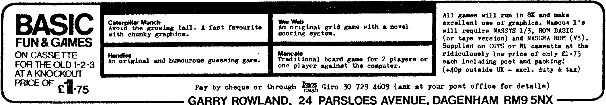

80-Bus News |
November–December 1983 · Volume 2 · Issue 6 |
| Page 48 of 67 |
|---|
For those who wish to persevere we are effectively going to invert the high order bit of the row address counter (IC53/11). This way we can use the asynchronous clear input as a ‘set-to-eight’ input rather than a ‘set-to-zero’. Lift IC56/5 IC56/6 IC68/5 IC53/11. Connect IC53/11 to IC68/5. The row address counter now directly drives the line counter IC68 instead of being routed via the inverter IC56c. Connect IC53/11 to IC56/5, and IC56/6 to IC54/5 (or IC44/11 or IC66/5). This means that we have the inverse of the msb of IC53 driving RS3. Finally connect IC53/1, (after disconnecting it from +5V if you added that earlier), to the load line from the PROM. (IC59/1 or IC68/11 or IC13/13 or IC57/10). This connects the load signal to the clear of IC53. As the RS3 line is now inverted in IC56c, clearing IC53 is equivalent to setting RS0-RS3 to 8, thus removing a further 8 TV lines from the frame.
If you totally loose the top line(s) of your display, trying taking things a step at a time until you reach a point where you can lock your TV/Monitor. First try presetting IC68 to 11, then 12, then…
That’s almost all for this issue, but just one final comment to confuse those of you who have read Richard Beal’s article. I have a Shugart SA800 8″ drive connected to my GM829, and currently it spends most of its time powered down. In this state it does not interfere in any way with my use of the 5.25″ drives, so you may be lucky like me, or unlucky like RB, in which case I suggest you switch off and unplug before doing any rewiring!
The above review just made it into the last issue by the narrowist of margins, and thus one correction and some updated information couldn’t be included. First a minor point, the board size is 8″x4″, not 8″x3″ as stated. Secondly, as the review board and documentation reached me at different times and from different sources one document was left out. This was a seven-page addendum to the Hisoft Pascal manual, detailing the differences between versions 4 and 5. (Anyone who has bought the card will have received a copy).
As well as various enhancements to the compiler it points out that all integers in HP5 are 32-bit integers, giving a MAXINT of 2147483647! For the REAL precision and format it refers you to the AMD9511 documentation (see the review). The information on where to patch the run-time routines in order to use the HSA-88B at an alternative address is also given.
For a user’s view of the HSA-88B see Dr Dark’s column.

| Page 48 of 67 |
|---|